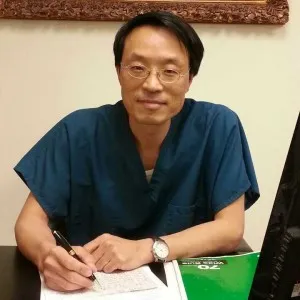

목 & 코 특수 치료 (N & N)
목 문제, 우울증, 불안, 알레르기, 비염, 축농증 및 천식 등을 치료하는 데 사용됩니다. 척수를 교정하여 추골 동맥의 압박을 방지하는 동시에 코를 치료하여 폐의 기운을 높여 각종 호흡기 질환을 개선합니다. 이를 통해 대부분의 문제를 근본적으로 해결하거나 완화할 수 있습니다.

L.Ac., D.V.M., M.S., O.M.D.
이숭호 원장은 한국에서 수의학(D.V.M.) 학위를 마쳤으며, 1990년대에 미국으로 건너와 수의과학 석사(M.S.) 과정을 수료했습니다.
대학원을 마친 후 전통 한의학에 깊은 관심을 갖게 된 이 원장은 중국 텐진으로 건너가 텐진 중의약대학교(OMD)에서 공부했습니다.
중국에서 6년간의 수학을 마친 후, 뉴욕주로 돌아와 25년 이상 침술 및 한의학을 실천해 왔습니다. 또한 추나요법(Tuina)과 홍채진단(Iridology)을 통해 환자를 정확하게 진단하고 치료하는 효율적인 방법을 개발해 왔습니다.
목에서 발생하는 혈류 제한은 편두통, 두통, 피로 및 긴장의 원인이 될 수 있습니다. 이숭호 원장의 치료는 건강한 순환을 회복하여 신체가 자연적으로 치유되도록 돕는 데 집중합니다.
목의 문제(잘못된 자세, 스트레스 또는 부상)로 인해 목에 위치한 추골 동맥이 주변 조직에 의해 압박을 받을 수 있습니다. 이 동맥은 각 경추(C1-C6)를 통해 뇌로 흐르는데, 그 통로가 좁아 부상이나 스트레스에 취약합니다. 압박을 받게 되면 뇌로 가는 혈류가 줄어들어 편두통, 두통, 우울증, 불안, 불면증 등을 유발할 수 있습니다.
목 문제, 우울증, 불안, 알레르기, 비염, 축농증 및 천식 등을 치료하는 데 사용됩니다. 척수를 교정하여 추골 동맥의 압박을 방지하는 동시에 코를 치료하여 폐의 기운을 높여 각종 호흡기 질환을 개선합니다. 이를 통해 대부분의 문제를 근본적으로 해결하거나 완화할 수 있습니다.

목 문제와 안면 회춘을 동시에 치료합니다. 목과 전체 척수를 치료하는 동시에 얼굴 부위를 관리합니다. 안면 및 전신 근육을 이완시켜 스트레스를 줄이고 주름 감소, 근육 긴장 완화, 피부 탄력 강화를 돕습니다. 콜라겐 생성을 촉진하여 더욱 젊고 빛나는 피부를 만들어 드립니다.
"이원장님께서 제 만성 편두통을 치료해 주셨는데, 단 몇 번의 세션만으로도 몸이 훨씬 좋아졌습니다."
"알레르기 때문에 방문했는데 N&N 치료가 정말 효과가 좋습니다."
"전문적이고 세심하며 지식이 풍부하십니다. 강력히 추천합니다."
"안면 치료로 주름이 줄어들었고 동시에 목 통증도 완화되었습니다."
대부분의 환자분들은 거의 통증을 느끼지 못합니다. 침은 일반 주삿바늘보다 훨씬 가늘기 때문입니다. 약간의 찌릿함이나 온기를 느낄 수 있는데, 이는 치료가 정상적으로 이루어지고 있다는 신호입니다.
일반적인 세션은 45-60분 정도 소요됩니다. 첫 방문 시에는 건강 이력 검토와 상담을 위해 조금 더 시간이 걸릴 수 있습니다.
헐렁하고 편안한 옷을 입으시는 것이 좋습니다. 치료 중 팔, 다리 또는 등에 접근해야 할 수 있습니다.
상태에 따라 다릅니다. 어떤 분들은 2-3회 세션 후에 호전을 보이지만, 만성 질환의 경우 더 긴 기간의 치료가 필요할 수 있습니다. 상담을 통해 개인별 맞춤 계획을 안내해 드립니다.
| 화요일 | 오전 9:30 – 오후 7:00 |
| 목요일 | 오전 9:30 – 오후 7:00 |
| 토요일 | 오전 9:30 – 오후 7:00 |
| 일요일 | 예약제 운영 |